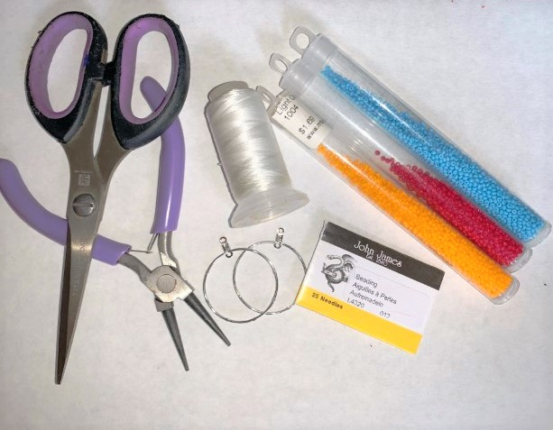

Home
How To: BEADED HOOP EARRINGS
by Winddancer George
Welcome to my first webpage! It's cute, isn't it!? It may be a little rough around the edges, so take it with a
grain of salt, because this page was as much of a learning experience for me, as this page will be for you. The
only difference being that I’m learning web design, and you’re here to learn about beadwork!
Materials Needed
- beading needle
- beading thread
- good quality seed beeds (size 10 is a good starting point)
- beeswax
- jewelry hoops
- ear hooks
- jewelry pliers
- scissors
You can find a lot of these supplies at the links below:
iBeadCanada.com
Beaded Dreams: Craft Supplies
Instructions
- To start, you will need to cut a section of thread, a full arms length should be enough. Once you have the thread cut you can then start coat the thread beeswax. You can do this by pulling the thread across the beeswax. Doing this treats the tread to make it stronger and last longer against wear, weather and water. Once the thread has been treated you can then string the needle. The needle should specifically be a beading needle, regular sewing needles can be too bulky and wont fit through the beads, which will cause problems in the future.
- Next you’ll need to tie the thread to the hoop. Cut off long excess strong until about half an inch remains. Burn the remaining tread down using a lighter, the result should be a tiny ball of burned nylon. This will prevent the knot from ever coming loose.
- Now is your time to get creative with colors. As a beginner I would recommend started with just a couple colors until you get a good feel for it.
- Next you will need to add 8 beads onto the string.
- Here, your going to have to pass your needle through the hoop, and insert the needle back up through the last four beads. To ensure that its done correctly, you should notice the thread and needle on opposite sides of the hoop, as shown in the photo below.
- This is what the result should be.